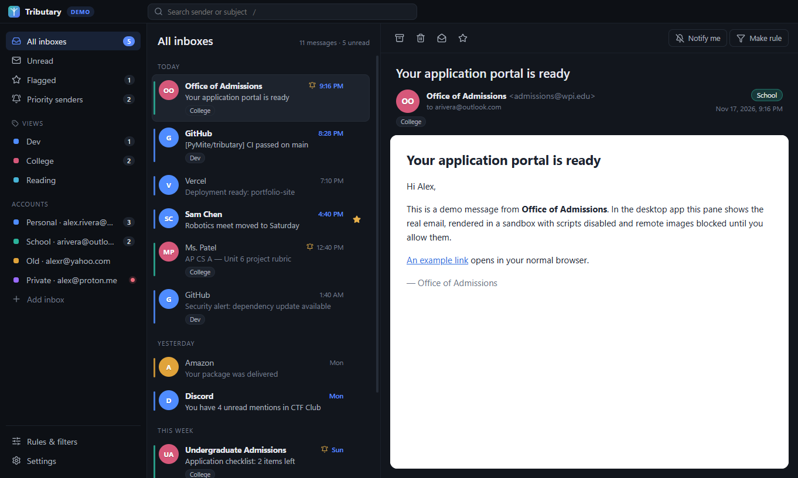
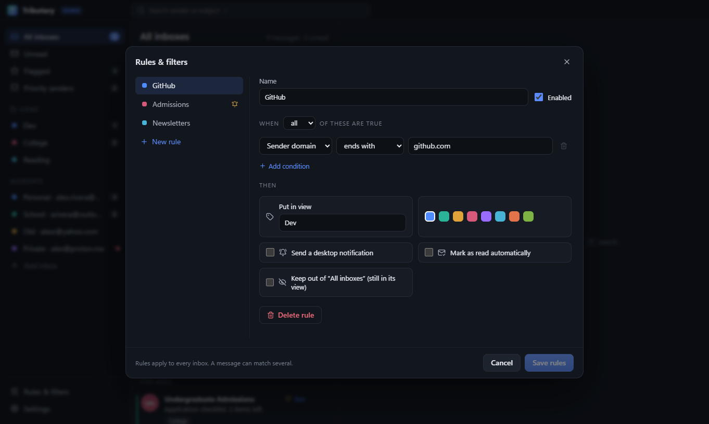
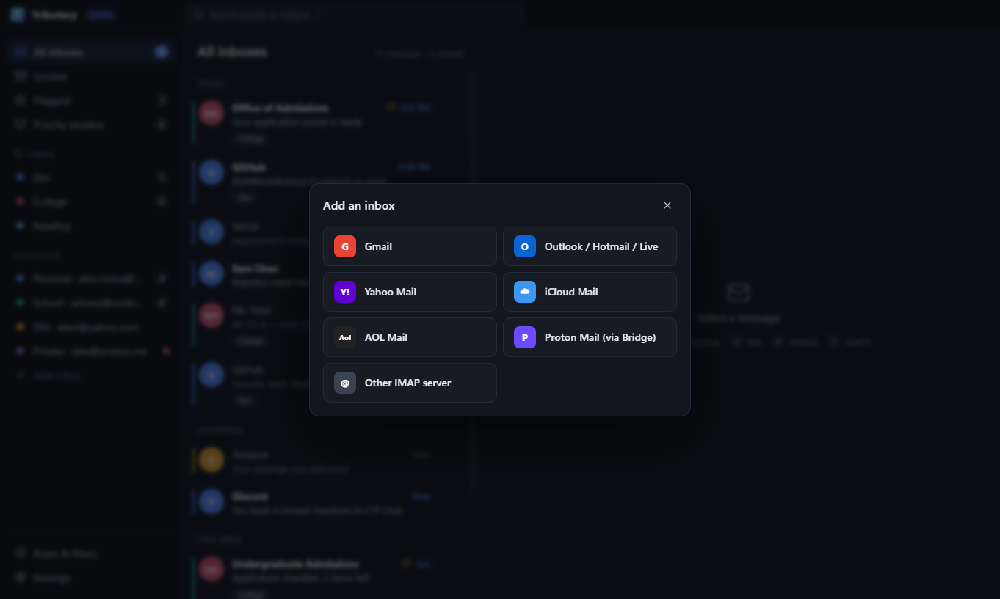

Tributary pulls Gmail, Outlook, Yahoo, iCloud, Proton and any IMAP account into one fast desktop app. You can sort senders across all of them and get notified only by the people you choose.
No account, no server, no telemetry. It runs on your computer and talks directly to your mail providers.

Grab the installer from Releases. It isn't code-signed yet, so Windows may say “Windows protected your PC”. Click More info → Run anyway. macOS & Linux steps
Pick Gmail, Outlook, Yahoo, iCloud, AOL, Proton or any IMAP server. Sign in through your browser or paste an app password. The setup guide covers each one.
Click Notify me on an email to get alerts from that sender. Add rules to sort mail into views. You stay signed in after that.
School, personal, the old Yahoo you still get receipts on. Tributary puts them in one stream and keeps each account visible through its own color.
All accounts in one list, grouped by day. A color stripe on each message shows which inbox it came from.
One click on Notify me and that sender gets a desktop notification, whichever account they write to. Everything else stays quiet.
Send *.edu into “College” and GitHub into “Dev”, and mark newsletters as read. Each rule applies to every inbox at once.
Tributary keeps a live IMAP IDLE connection open, so new mail arrives within seconds without polling.
Remote images stay off until you load them for a message. Email HTML is sandboxed and its scripts never run.
j/k to move, e to archive, s to star, u for unread and / to search. If you know Gmail's shortcuts, you know these.
Keep several Google or Microsoft app keys in a local .env, note each one's plan and limits, and see its usage. Tributary can move new sign-ins to the next key when one runs out. How it works
Optionally start at sign-in, straight to the tray. Once a day it checks GitHub for a new release and tells you. Nothing about you or your mail is sent.
A rule matches all or any of its conditions and then does one or more things.
contains, is, starts with, ends with or a regex
Pick your provider and paste an app password, or sign in through your browser for Outlook and Gmail. The setup guide walks through every provider.

Tributary is a desktop program, not a web service. It connects straight from your computer to Google, Microsoft, Yahoo and the rest.
| What | Where it lives |
|---|---|
| App passwords & sign-in tokens | Encrypted with your OS keystore (Windows DPAPI / macOS Keychain / Linux libsecret) in your user profile |
| Message list cache | Sender, subject and date for recent INBOX mail, stored as local JSON so startup is instant |
| Message bodies | Fetched from your provider when you open a message and never written to disk |
| Rules & settings | Local JSON in your user profile |
| Sign-in keys | A .env file in your user profile that you can open and edit |
| Update check | Once a day, asks GitHub's public releases API for the latest version number. Nothing about you is sent, and you can turn it off |
| Analytics / telemetry | None |
| Leaving | Erase all data signs out, revokes Google sign-ins and deletes everything Tributary stored. Uninstalling |